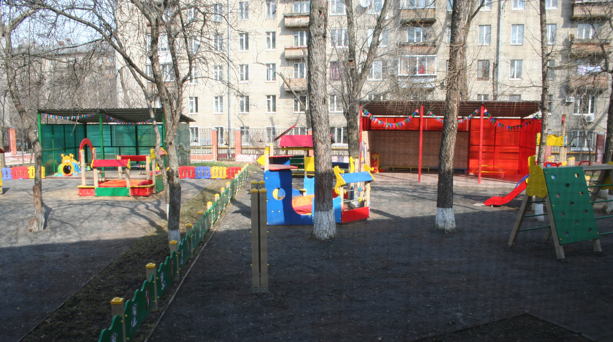

Все лучшее - детям
Год постройки здания детского сада — 1960. Здание детского сада — двухэтажный кирпичный корпус с 2 основными входами и 2 запасных выходами. 
Территория детского сада — ~0,5 га, озеленение — ~50% территории. Территория разделена на функциональные зоны: прогулочные площадки для всех возрастных групп с теневыми верандами; спортивную зону, состоящую из двух площадок; хозяйственную зону
Режим работы — 5 дней в неделю с понедельника по пятницу, с 7:00 до 19:00.
Питание — 4-х разовое, в соответствие с «Типовым рационом питания для детей от 1,5 до 3-х лет и от 3-х до 7 лет в государственных образовательных учреждениях, реализующих общеобразовательные программы дошкольного образования с 12-часовым пребыванием детей».
Проектная наполняемость детского сада — 75 детей.
Количество групп — 4, из них 3 группы одновозрастные и одна группа разновозрастная:
Фактическая наполняемость детского сада в 2013/2014 учебном году — 88 детей.